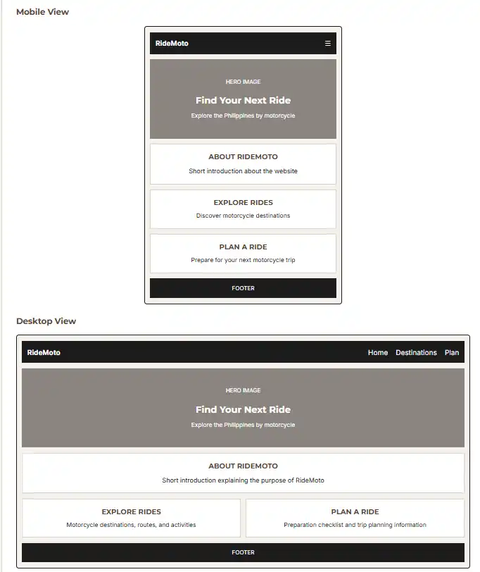

1. Site Name
The name RideMoto combines "Ride" and "Moto," making it simple and easy to remember. The name represents a website focused on motorcycle travel and exploring destinations around the Philippines.
The tagline "Ride. Explore. Repeat." represents the main idea of the website: encouraging riders to discover new places, enjoy the journey, and continue exploring.
Proposed domain name: ridemoto.ph
2. Site Purpose
RideMoto is a motorcycle travel guide designed for riders who want to explore the Philippines by motorcycle. The website provides information about motorcycle destinations, suggested routes, estimated travel time, things to see and do, preparation tips, and estimated trip expenses.
The website will help riders discover possible destinations and prepare for a motorcycle trip without needing to search through many different sources. The project will focus on simple, beginner-friendly information that is useful for planning weekend rides and longer motorcycle trips.
3. Scenarios
The following questions represent what a motorcycle rider may ask when visiting RideMoto:
- What motorcycle destinations can I visit from Cavite or nearby areas for a weekend trip?
- What should I prepare and bring before going on a long motorcycle ride?
- How much should I budget for fuel, tolls, food, and other expenses on a motorcycle trip?
- What are some interesting places and activities at a motorcycle destination?
4. Color Schema
RideMoto will use a warm and simple color palette that gives the website a clean outdoor and travel-inspired appearance. The colors will also provide enough contrast for readability.
Primary
#5A4636
Used for main headings, important links, buttons, and selected accents.
Secondary
#8A8580
Used for supporting text, subtitles, and less important information.
Dark
#1C1C1C
Used for the header, footer, navigation areas, and strong text.
Background
#F5F2ED
Used as the main page background.
Surface
#FFFFFF
Used for cards, content areas, and text displayed on dark backgrounds.
Border
#D8D2CB
Used for borders and subtle visual separation.
5. Typography
Montserrat
Used for the RideMoto logo, main headings, section headings, and other important titles.
Ride. Explore. Repeat.
Inter
Used for paragraphs, navigation links, descriptions, scenarios, and general website content.
Explore the Philippines by motorcycle.
6. Wireframes
This wireframe shows the planned layout of the RideMoto home page for different screen sizes.
